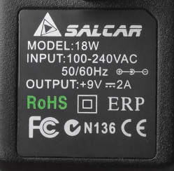

I'm not sure what else to tell you - I also have doubts that I could fry the board so easily, having used it maybe 20 hours. The transformer I returned as defective. The unresponsive Axo Core I still have, and I can send it to you if you'd like to look at it (no replacement requested).
Power Supply for stand alone use
KHS
#22
Sorry to resurrect this thread for a question that may have already been answered in more universal terms, but I thought I'd ask about a specific (and I'm sure common) power supply option for the Axoloti: a 1-Spot adapter with a center-positive adapter. Are there any perceivable issues in using this configuration? My assumption is no, given it's a 9v DC adapter made center-positive by the adapter, but I thought I would ask just to make sure I don't inadvertently fry a board.
dylan
#23
Hello - would 12V, 150mA (with no device connected to the usb host port) be ok?
I've tested briefly and it runs fine but wanted to double-check if this would be too low a rating for axoloti's minimum requirements?
Edit: I understand now - when there is power on dc input the usb stops supplying power and the editor displays voltage from the dc - so looks like 4.94V @ 12V/150mA which is fine right.
johannes
#24
An adapter supplying 12V/150mA is fine if you do not use the USB host port.
The editor indeed displays the voltage after the 5V regulator and the 3.3V regulator, if it indicates 4.94V for 5V, this is perfectly fine.
AdrianWillaert
#25
it seems that a Multiple PSU with at least 9V/500mA, center pin positive, suitable to give power to 4 Axoloti with SD and USB MIDI, doesn't even exists on the market 
thetechnobear
#26
Not quite sure what you mean, a quick search on google shows quite a few 9v 2amp owner supplies.
or go 12v less amps?
I've also had 4 axos running off a power hub, that's was powered via 12v 2 amp
Also I dont think you'll need 500ma per board, as it's unlikely all 4 will draw 500ma, and if they do isn't that at 5v?
Axoloti seems pretty 'open' to different power options 
Btw if your looking for a supply that has multiple outlets, perhaps look instead for a power daisy chain
( though double check their current rating)
AdrianWillaert
#27
I was looking for a sort of "pedal board dc hub" but all the models I've found are:
center pin negative, 9v/200mA maximum for each barrell, so reading through the post it seems not suitable
what model are you using?
yeah it was an option but @johannes discourage the daisy chaining because not isolated if I don't go wrong!
Thanks!
thetechnobear
#28
the main hub i use is this:
(its a bit expensive, and i bought it primarily as its MTT, this this is not required for axoloti)
I have used other powered hubs as well, just make sure they can deliver the 500ma to each port, which basically means look for something with 2A or more.
(Im hesitant to say much more, since although I've had no issues with any hubs I've tried...but jaffa did report issues with some cheaper hubs he tried)
daisy chaining...
I read this as, don't start connecting the DC jacks (at either adapter or axoloti end) whilst the power is on (hotplugging) - so your ok, if you connect things up whilst the power is off, then turn the power on.
of course you then have to remember to always do this, as if you forget you might have issues.
(also I point out Ive not yet tried this, so I may be wrong)
AdrianWillaert
#29
Yes I would like to pack the DC PSU with the axoloti, so they will be always connected.
I'm using an USB HUB too by now, but I don't like it because it brings up some elctronic noise.
But as I pointed out before, it's pretty impossible to find non-USB Multi-Psu with center pin negative and 9v/500mA
thetechnobear
#30
Axoloti is centre pin positive
If your going to put this all in a case, the other option is to solder header pins to X2, and then supply the voltage directly, then add you own DC socket and switch on the outside of the case.
AdrianWillaert
#31
Yes sorry I mean:
it's pretty impossible to find non-USB Multi-Psu with center pin positive and 9v/500mA
AdrianWillaert
#32
it can be a proper solution to use a USB Hub with four USB to DC cables like this?

AdrianWillaert
#33
I've found a power supply 18W, 100-240VAC, 50/60HZ center pin positive, output +9V/2A

this seems to be good for daisy chaining 4 axolotis, right?
I just need to be careful and plug the psu only after all the board's barrels are connected, right?
Sorry for asking so many stuff but I'm really afraid to burn my beloved boards...
Gavin
#34
If you have a single power supply +5V with 2A, you can hardwire connect 4 USB cables to the + & - on the USB to the power supply (ignoring the signal lines) and you can easily power 4 Axo's as standalone.
Although everyone has different preferences, I believe this is one of the easiest.
AdrianWillaert
#35
Just to sum up, this is what I'm planning to use
- power supply 18W (9V 2A), center pin positive, input 100-240VAC, 50/60Hz
- Splitter cable to Daisy Chain my 4 axolotis via dc barrell (like pedal board cable to be clear)
the only thing I need to be careful with is to plug the 4 axoloti before plugging the psu to the electricity network or switching on the electric socket.
If @johannes @thetechnobear and everybody confirms this, I'm ok and happy to play!
I really prefere to avoid soldering or strange esoteric hacking, not a tinkerer/maker just a humble musician who don't want to destroy axoloti
SirSickSik
#36
Is it possible to hardwire the 5v from one board to a couple of other boards?
I'm powering from a 5v USB powerbank..
if yes, which out/in sockets should I use on the feeding/receiving boards?
I've just tried it out with my "broken" board (can't use it, but leds still seem to work)
I connected the gnd and 5v outputs of one board to the gnd and 5v outputs of the broken board and this seems to work, it starts up, though, it seemed to be starting up 3 times..
I really have no idea whether I'm doing it right or doing something totally wrong.. so please, a little bit of help overhere..
almost there..
{kind=link}
Gavin
#38
It depends on what you are exactly trying to do.
The easiest way with your setup, would be to have an adapter coming out of the USB host port on one board going into the micro usb port in the other. You could chain them all this way.
However if you intend to connect more devices to your board, you may struggle to get the source you require. But you can test it and see what the demands are like.
SirSickSik
#39
the thing is that the USB connectors are still just a tiny bit too big and touch the circuitboard next to it (I'm a bit anxious that chips might get hot and melt them). So I want to prevent that by daisychaining them by hardwiring the 5v between the last couple of boards which don't get a midi-controller connected anyways (everything will be done from a single quneo).
Also, I need to save space for future adjustments, like an inbuild midi-thru/splitter and mixer (last 4 boards are going to be 2x2 serial/parellel: 2 for drums&fx and 2 for leads/bass/melody/fx. The first one is gonna be a midi-recorder/presets core)
I've already tried powering them all on from the 5v powerbank, with individual usb-connectors, which seemed to work perfectly. Now it's just the question.. could I power 3 extra boards from a single board.
so:
powerbank has two USB outputs, together they give 2.4A at 5v.
-first output gets an usb-hub, splitting it to power 1 axoloti and the Quneo midi controller (using an external-power usb-Y-splitter to power the quneo directly from the powerbank).
-second output would power a "single" axoloti, which in his turn would power 3 other axoloti's (plus itself of course).
atm I'm not using any of the analogue/digital in/out pins, so this is not drawing any current.
Though I am thinking of adding a couple of sensors/joysticks/knobs/buttons and make a custom receiver module for the quneo that I can switch off/on by midi from the quneo and multiplex between different parameters inside the patch. But I'm not there yet and when that time comes, I might very well just add an extra powerbank.
So the question is only about the last part, powering 3 extra axoloti's from another axoloti that's only 5v powered, without adding any more controllers and how to connect these 5v pins. There are just so many 5v/gnd pins and a good friend warned me about just connecting these together, so yeah... what is it, can I or can't I hardwire when using 5v over usb as powering and which pins should be connected??
axoman
#40
Have you thought about these tiny power boosters?
They have a tiny brass screw on them (basically a potentiometer) to adjust the amount of boost, and the circuit boards themselves are pretty small (and very cheap). I'm not sure whether it's suitable, but just thought I'd point it out cause there seems little point in going for a pretty enclosed power-bank if it's all going to be hidden away anyway. They're so cheap you could even buy more than one if you wanted to make the wiring super convenient.